PES
University
Marketing a new BBA Sports Management course through the mediums best suited to reaching prospective students and encouraging enrolment or enquiries to the admissions department.
A new course, and every surface a prospective student passes.
PES University was introducing a Sports Management degree into a market that did not yet know it existed. The campaign had to do the explaining and the persuading at once — and reach students where they actually look, which turned out to be a spread from newspaper to billboard to Instagram.
Sports photography carries the whole system: the same athletes appear across press, brochure, standee and feed, so a student who sees the billboard recognises the landing page. Thirteen spreads, in these sections:
- 01Overview & brief
- 02Photography
- 03Newspaper advert
- 04Brochure design
- 05Standee design
- 06Billboard & social
- 07The course landing page
Thirteen spreads, front to back.
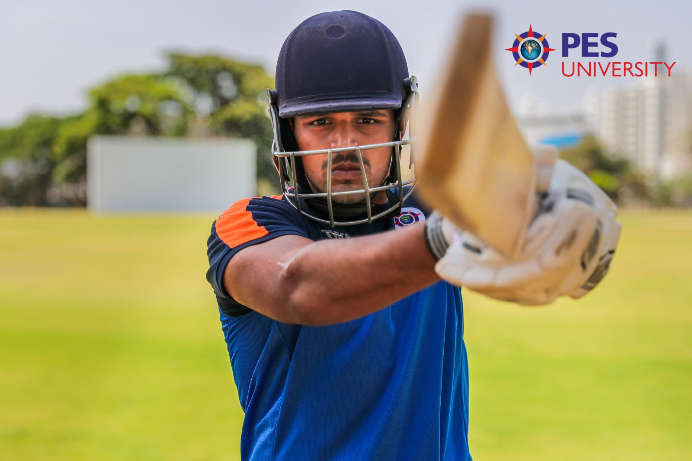
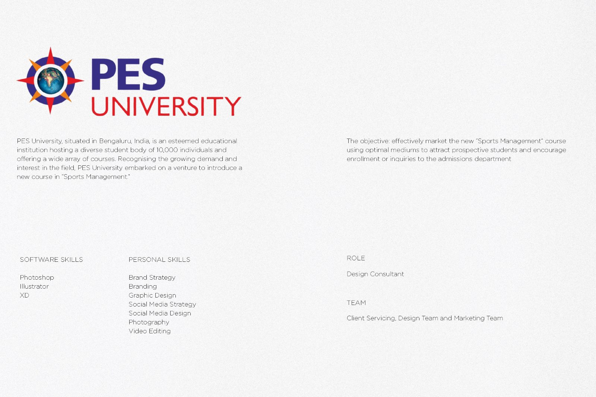
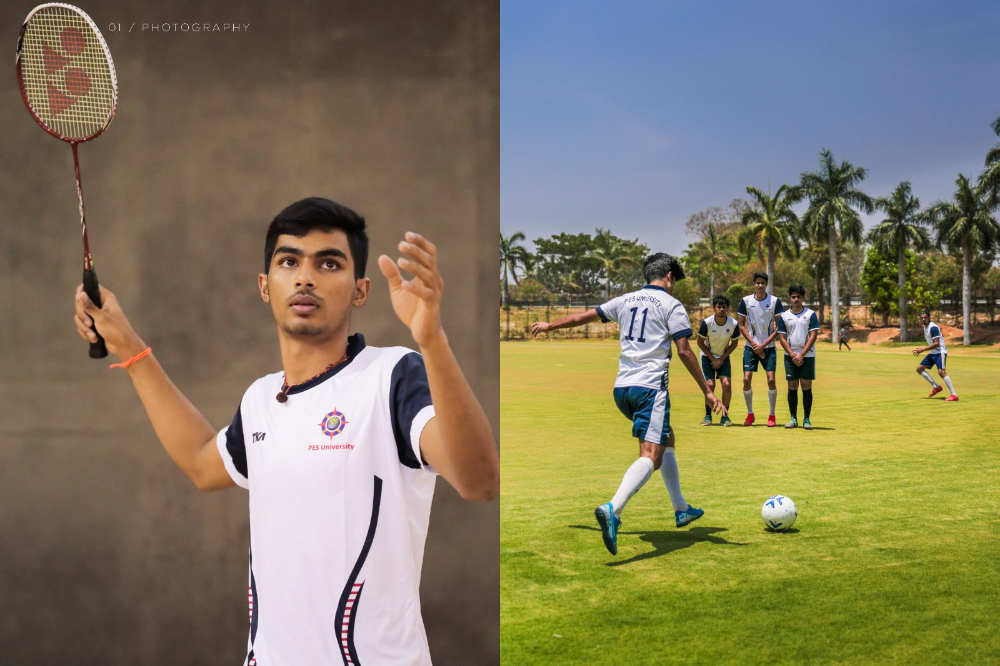
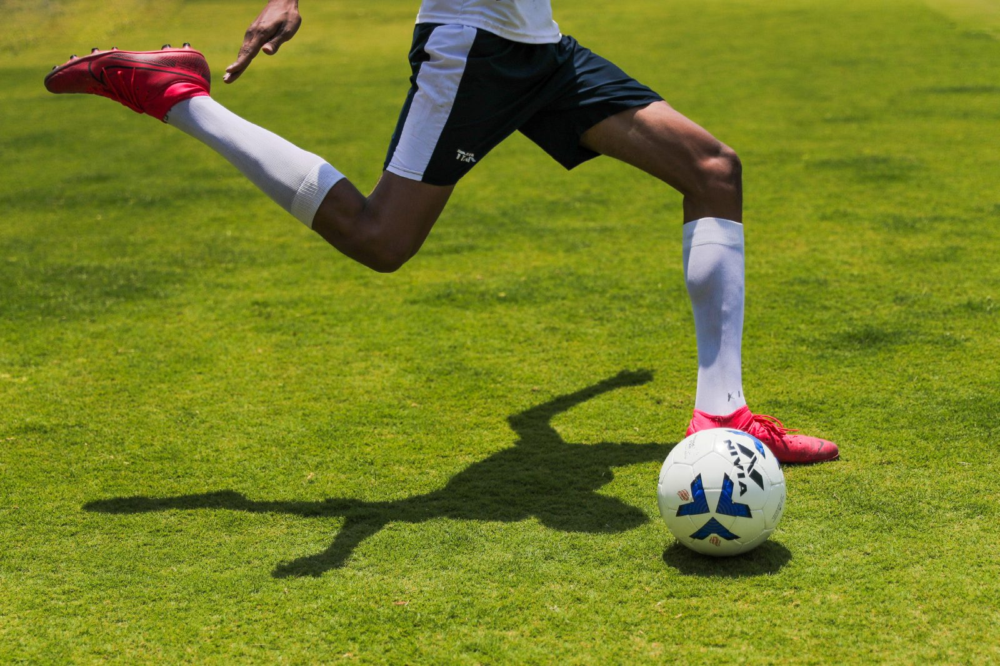
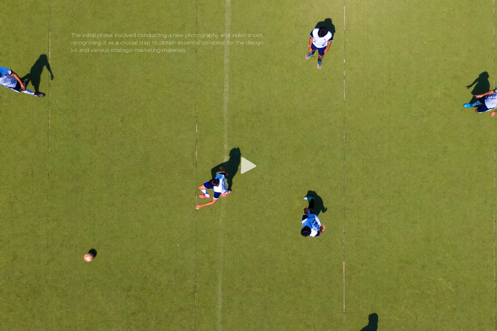
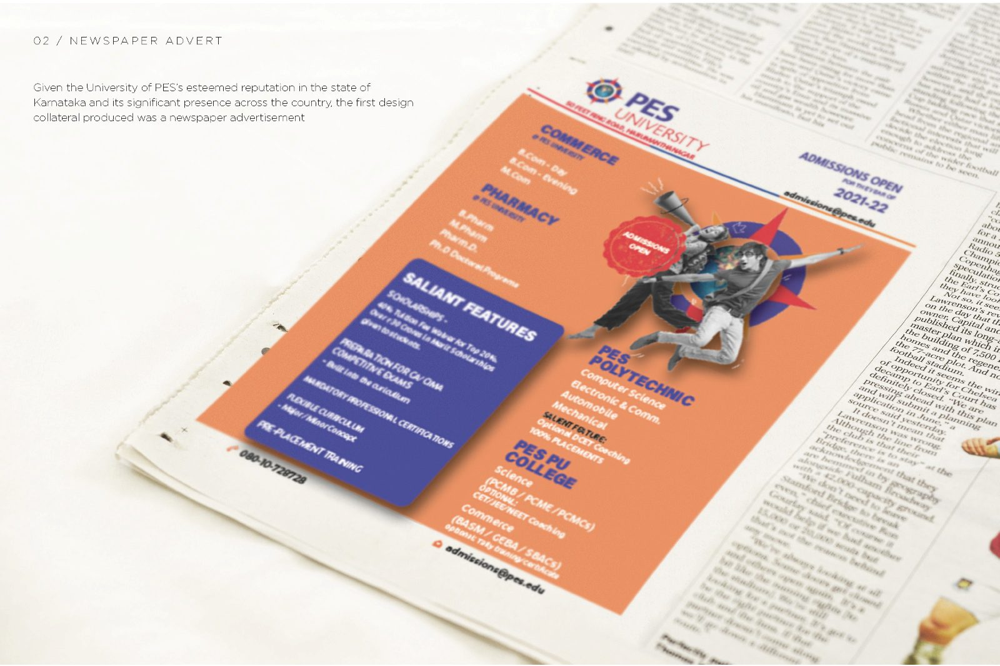
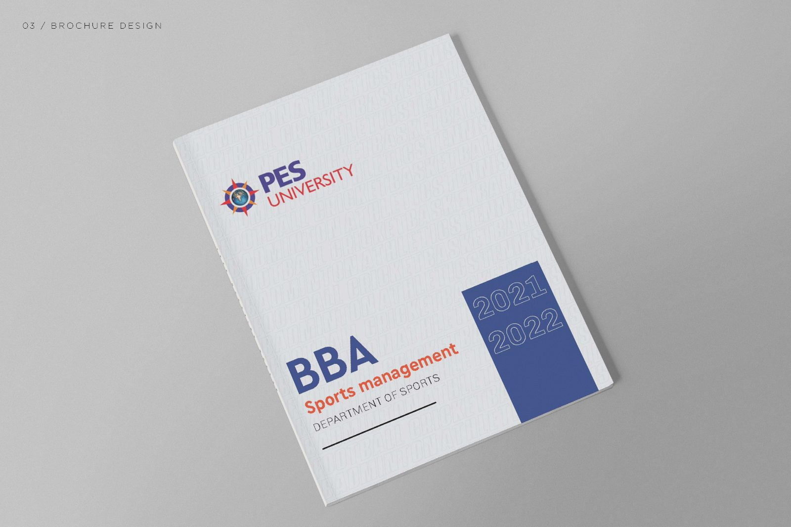
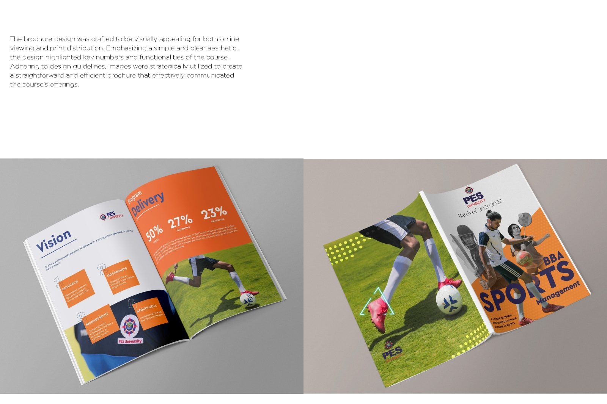
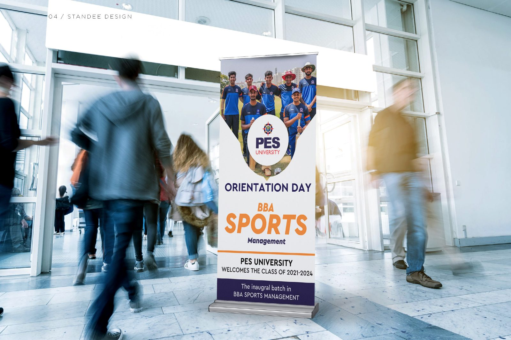
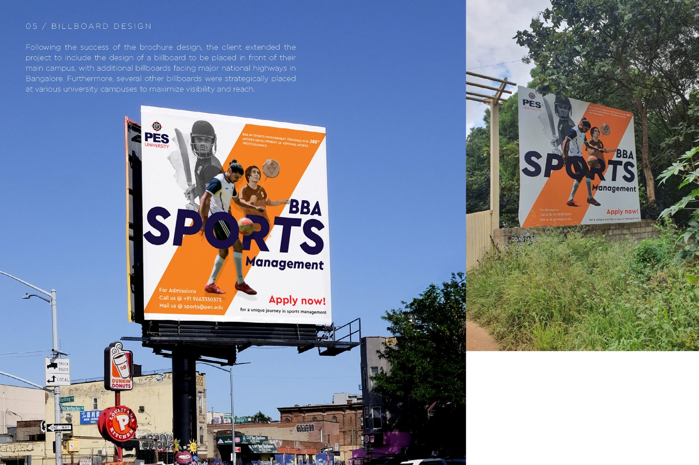
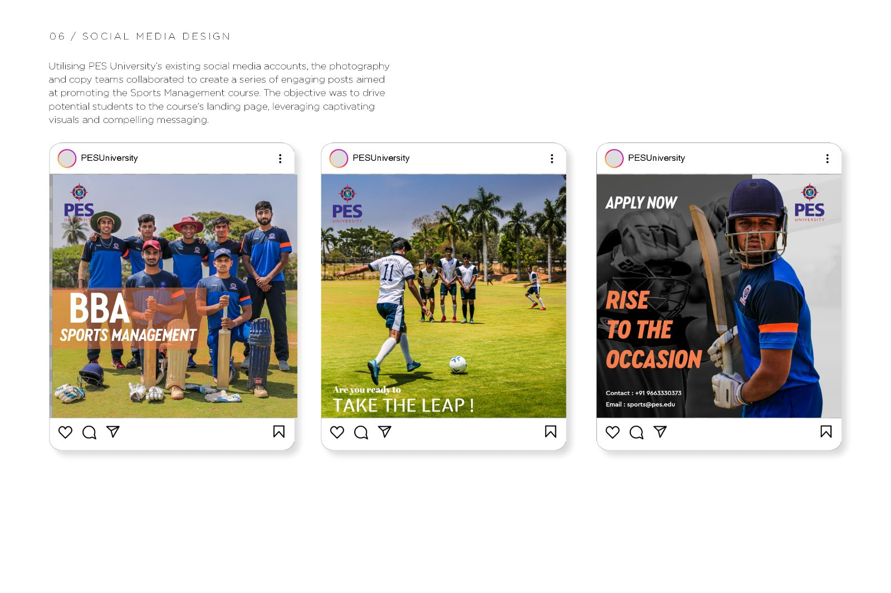
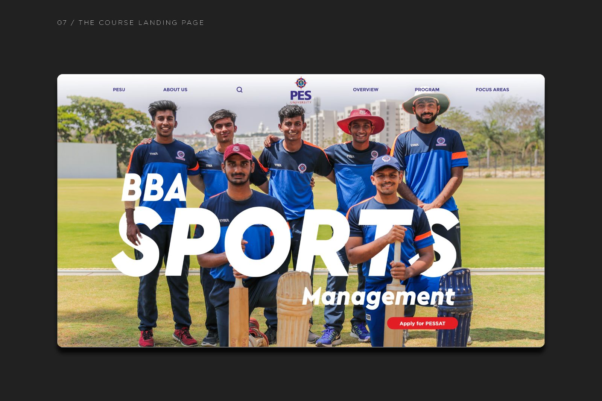
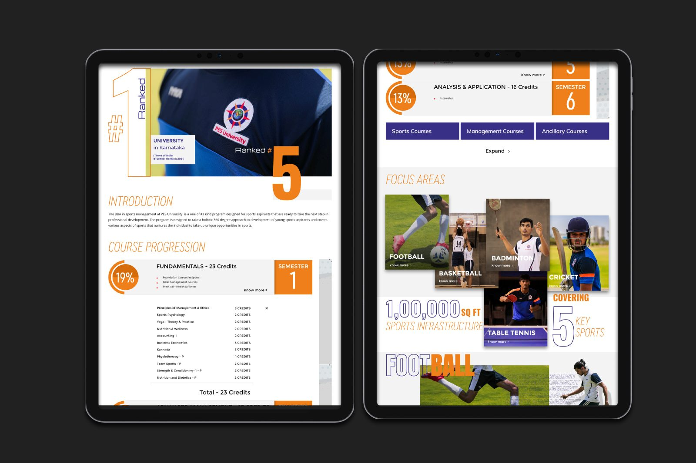